Huit besoins métier, huit filtres
BD TOPO® 3.5 © IGN, Haute-Garonne.
Chaque histoire part d'une question posée dans un service technique, une collectivité ou un bureau d'études, puis la traduit en réglages FilterMate, étape par étape, sur la BD TOPO complète d'un département. Les captures montrent la fenêtre QGIS entière, pour comparer avec votre écran, et chaque résultat est chiffré.
 01
01Le dossier communal en trois minutes
Cadrer 12 couches départementales et livrer un GeoPackage stylé.
12 couches · 12 380 bâtiments 02
02Qui vit au bord des grands axes ?
Un tampon calculé par expression selon chaque catégorie de route.
1 999 bâtiments · 74 ERP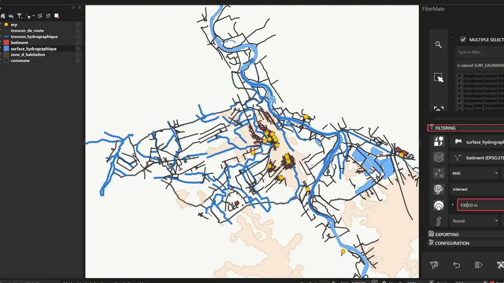
03Ce que la Garonne peut atteindre
Une bande de 300 m puis 100 m, avec annulation et rejeu.
300 m · 14 181 bâtiments 04
04Tous les ponts de la métropole
Cadrer un EPCI de 37 communes, puis appliquer le prédicat Cross.
1 112 routes · 190 ouvrages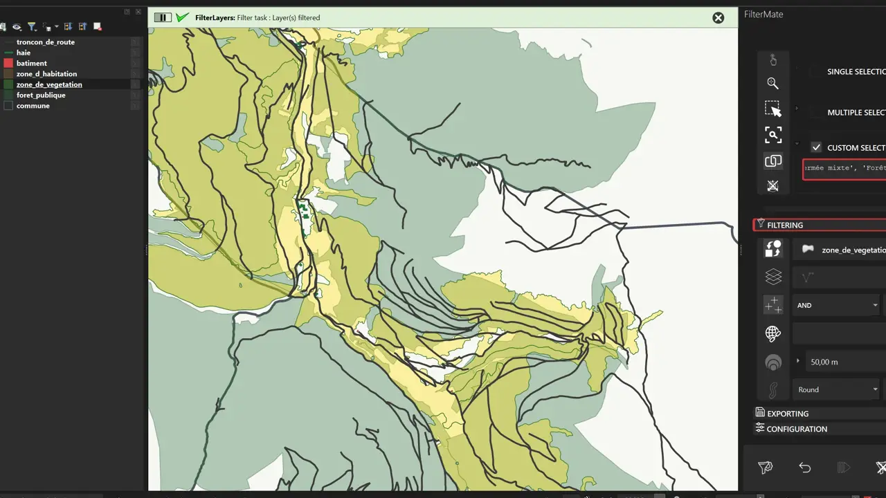
05Débroussailler autour des maisons
Sélection par expression, tampon de 50 m, puis filtre attributaire.
58 bois et forêts 06
06Les hameaux que les secours atteignent mal
Disjoint trouve ce qui reste au-delà d'une zone de 200 m.
22 hameaux au-delà de 200 m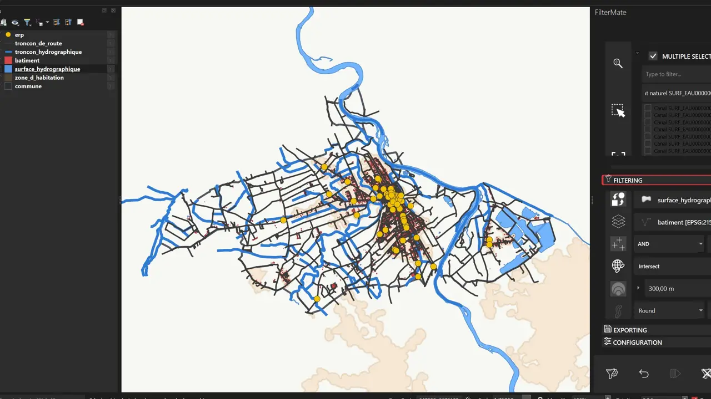
07La bibliothèque de requêtes
Enregistrer, décrire, rejouer et partager un filtre complet.
Même résultat · un clic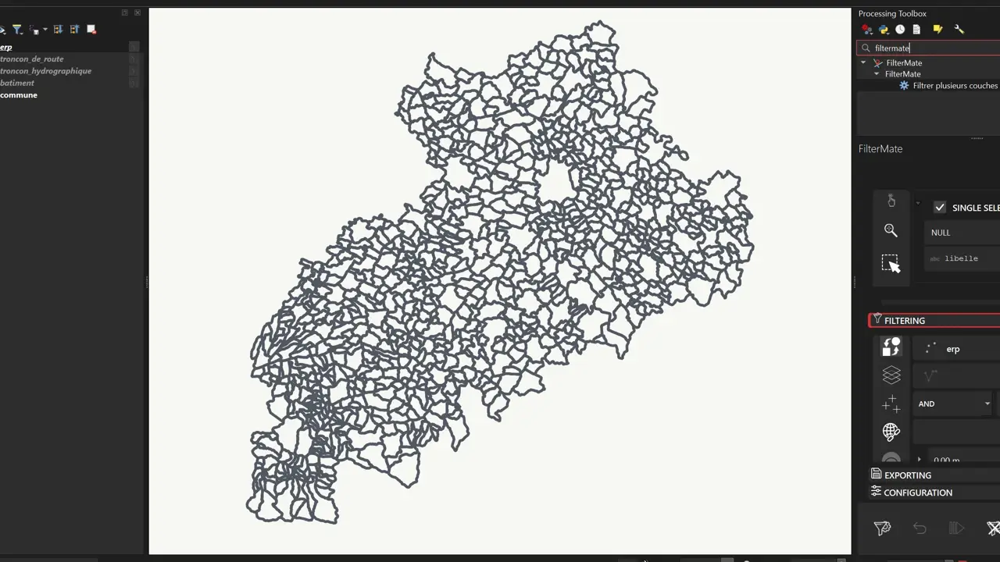
08Qu'est-ce qui a changé ?
Appliquer une expression de date à quatre couches depuis Processing.
4 couches · 1,6 million d'objets0Le terrain de jeu
Toutes les histoires utilisent le même fichier : la BD TOPO 3.5 de la Haute-Garonne, telle que l'IGN la diffuse gratuitement sur la Géoplateforme, en un seul GeoPackage de 2,9 Go et 53 couches. Rien n'a été découpé au préalable : c'est FilterMate qui cadre le territoire à chaque fois.
| Couche | Objets dans le département | Rôle dans les histoires |
|---|---|---|
batiment | 1 173 829 | Cible principale : ce qu'on protège, ce qu'on dessert |
troncon_de_route | 383 112 | Source des tampons routiers, cible des franchissements |
haie · zone_de_vegetation | 416 105 · 261 051 | Végétation à débroussailler |
troncon_hydrographique · surface_hydrographique | 49 344 · 9 969 | Cours d'eau et surfaces en eau |
erp | 11 384 | Établissements recevant du public : écoles, mairies, commerces |
construction_lineaire | 12 473 | Ponts, barrages, murs |
commune · epci | 930 · 38 | Territoires de cadrage |
filtermate.log sur un portable ordinaire.
1Le dossier communal en trois minutes
BD TOPO® 3.5 © IGN, Saint-Gaudens.
Le besoin
Camille, chargée d'études dans un bureau d'études, répond à une consultation de la ville de Saint-Gaudens. Elle a le GeoPackage départemental complet et doit livrer à son client, ce soir, uniquement ce qui concerne la commune : bâtiments, voirie, hydrographie, végétation, équipements. Avec les styles, dans un fichier qu'il ouvrira d'un double-clic.
La traduction FilterMate
La commune est la couche source, choisie par son nom en sélection simple. Toutes les autres couches sont cochées d'un coup dans Layers to filter, avec le prédicat Intersect et sans tampon. L'onglet Exporting écrit ensuite un GeoPackage avec projet embarqué, styles QML et archive ZIP.
- Charger les 13 couches et ouvrir FilterMate. Le panneau Couches affiche les effectifs du département entier : 1 173 829 bâtiments, 383 112 tronçons de route. Cliquez sur commune : elle devient la couche source. Dans la zone Exploring, cochez Single selection, mettez l'expression d'affichage sur
"nom_officiel"et tapez « Saint-Gaudens » dans la liste. Le bouton Tracking de la colonne Exploring étant actif, le canevas se recentre tout seul sur la commune.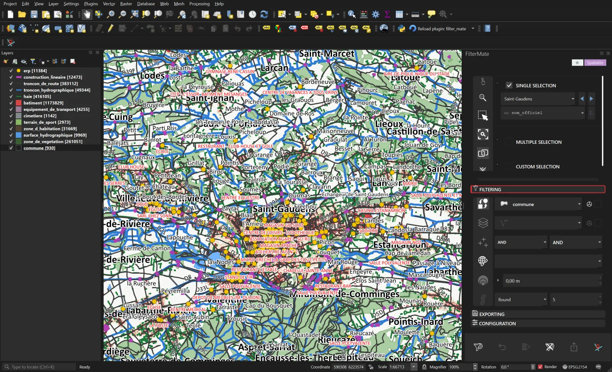
Étape 1. La commune est sélectionnée (surbrillance jaune) ; autour d'elle, tout le département reste chargé. - Cocher toutes les cibles. Onglet Filtering, ligne Layers to filter : clic droit dans la liste puis Select All. Le prédicat Intersect est coché, la ligne Buffer reste désactivée.
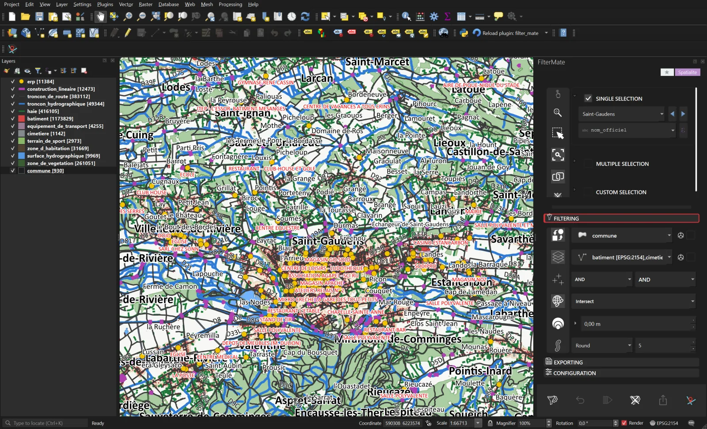
Étape 2. Douze couches cibles, un prédicat, pas de tampon. - Filter. Le journal indique moins d'une seconde pour les douze couches : sur GeoPackage, FilterMate interroge d'abord l'index R-tree de chaque table, puis n'évalue
ST_Intersectsque sur les candidats.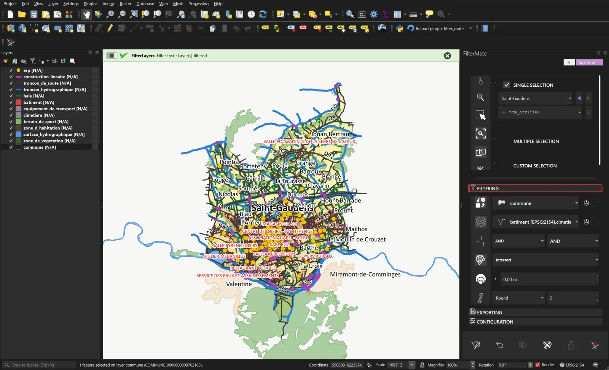
Étape 3. Les couches ne montrent plus que le contenu de la commune. Les polygones de végétation qui chevauchent la limite sont conservés entiers : c'est le sens d'Intersect. 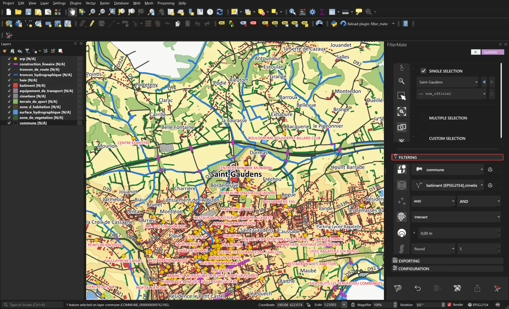
Zoom sur le centre-ville : 12 380 bâtiments, 317 ERP, 2 902 tronçons de route. - Configurer l'export. Onglet Exporting : les 12 couches, la projection EPSG:2154, les styles en QML, le format GPKG, le dossier de sortie et une archive ZIP.
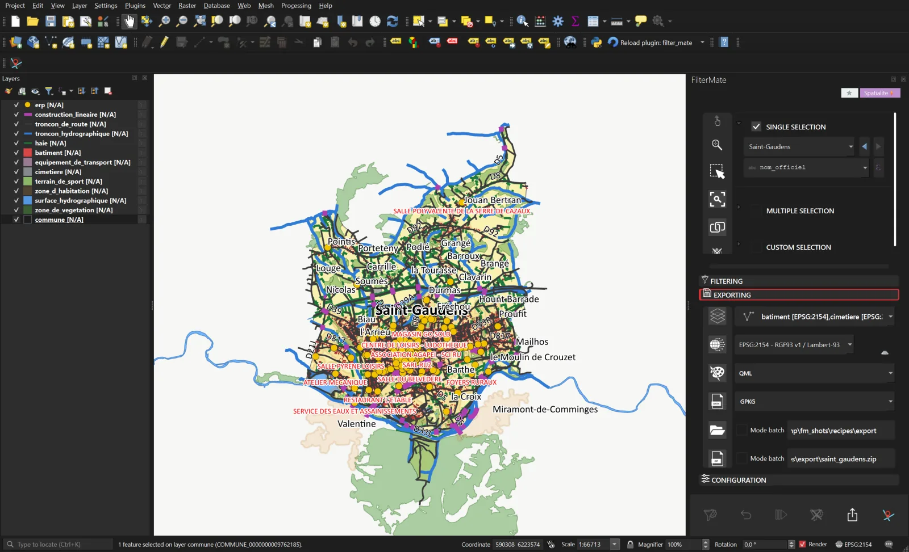
Étape 4. Tout est réglé, rien n'est encore écrit. - Export. Comme le format est GeoPackage et qu'il y a plusieurs couches, FilterMate affiche un récapitulatif et propose de conserver la hiérarchie des groupes. Validez : le fichier est écrit en 4 secondes avec un projet QGIS embarqué.
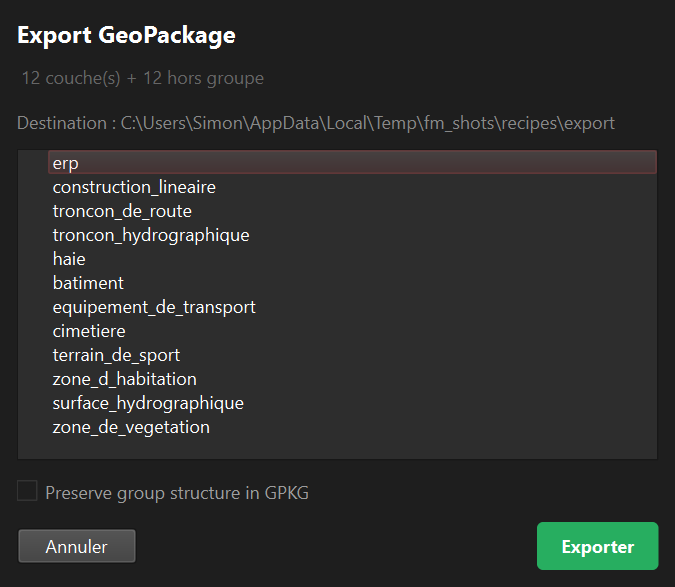
Le récapitulatif avant écriture. 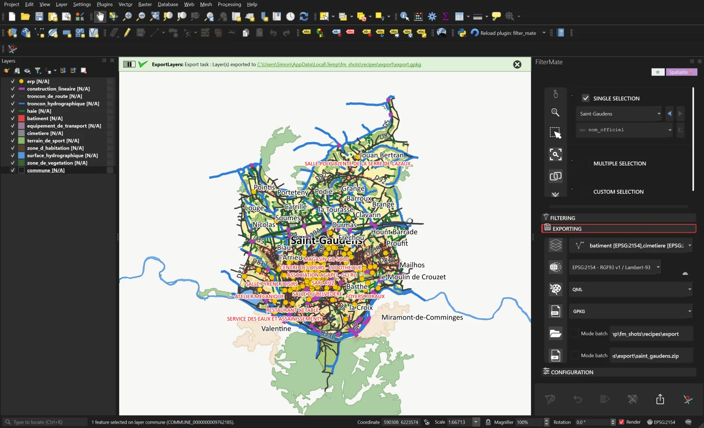
Étape 5. Export terminé ; le client ouvrira le .gpkg et retrouvera la carte telle quelle.
Résultat
| Couche | Département | Saint-Gaudens |
|---|---|---|
| batiment | 1 173 829 | 12 380 |
| troncon_de_route | 383 112 | 2 902 |
| haie | 416 105 | 1 505 |
| zone_de_vegetation | 261 051 | 1 006 |
| erp | 11 384 | 317 |
| troncon_hydrographique | 49 344 | 157 |
| zone_d_habitation | 31 669 | 109 |
| construction_lineaire | 12 473 | 77 |
| surface_hydrographique | 9 969 | 42 |
| equipement_de_transport | 4 255 | 39 |
| terrain_de_sport | 2 973 | 27 |
| cimetiere | 1 142 | 2 |
Sous le capot
Filtre fournisseur généré pour la couche des bâtiments, lisible dans Propriétés de la couche → Source :
ROWID IN (SELECT id FROM "rtree_batiment_geometrie"
WHERE minx <= 517706.0 AND maxx >= 511938.3
AND miny <= 6231762.5 AND maxy >= 6222765.8)
AND ST_Intersects("geometrie", ST_MakeValid(ST_GeomFromText('Polygon ((…))', 2154)))2Qui vit au bord des grands axes ?
BD TOPO® 3.5 © IGN, Muret.
Le besoin
Nadia instruit le volet bruit du PLU de Muret, traversée par l'autoroute A64 et plusieurs départementales. Le classement sonore des infrastructures impose des largeurs de secteur différentes selon la catégorie de la voie. Elle veut la liste des bâtiments et des établissements recevant du public situés dans ces secteurs, avec une largeur qui dépend de chaque route.
La traduction FilterMate
Après le cadrage sur Muret, la couche source devient troncon_de_route, avec une sélection personnalisée "importance" IN ('1', '2'). Le tampon est une expression évaluée pour chaque tronçon : 300 m pour l'importance 1, 250 m pour la 2. Le type de tampon Flat évite les arrondis en bout de tronçon. Cibles : batiment et erp.
- Cadrer Muret. Même geste qu'à l'histoire 1 : commune en source, Muret en sélection simple, toutes les couches en cibles, Intersect, Filter. Muret compte 19 458 bâtiments, 354 ERP et 5 512 tronçons de route.
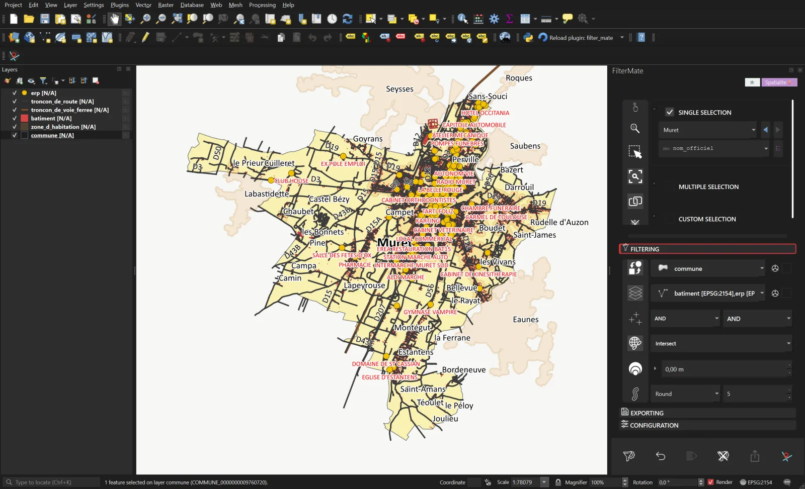
Étape 1. La commune est cadrée ; l'A64 traverse le territoire du nord-est au sud-ouest. - Choisir les grands axes. Cliquez sur troncon_de_route dans le panneau Couches : elle devient la source. Cochez Custom selection et saisissez
"importance" IN ('1', '2'). 102 tronçons sont retenus, sur les 5 512 de la commune.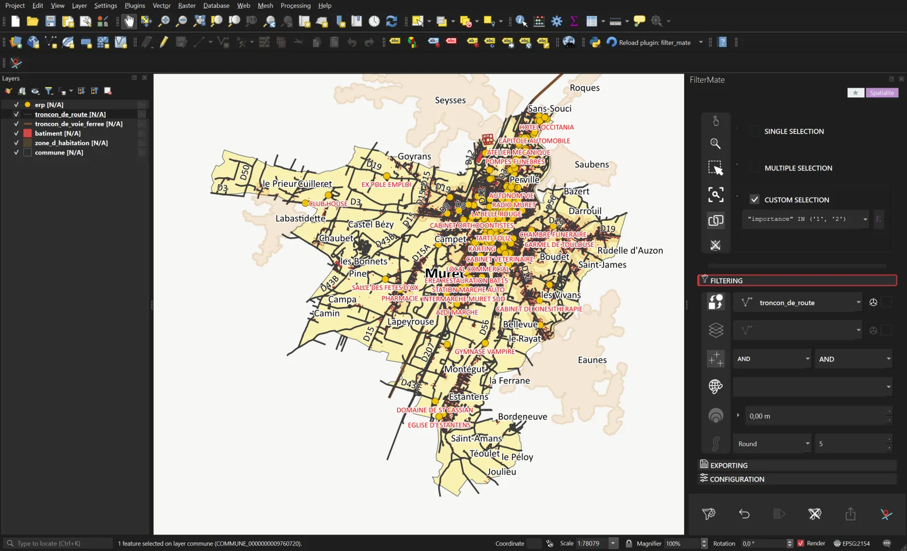
Étape 2. L'autoroute et les départementales principales sont surlignées. - Tampon par expression. Cibles batiment et erp, prédicat Intersect. Sur la ligne Buffer value, cliquez la petite flèche à gauche du champ pour passer en mode expression et saisissez :
Sur la ligne suivante, choisissez le type Flat.CASE WHEN "importance" = '1' THEN 300 WHEN "importance" = '2' THEN 250 ELSE 100 ENDÉtape 3. La distance n'est plus un nombre mais une expression QGIS évaluée tronçon par tronçon. - Filter.
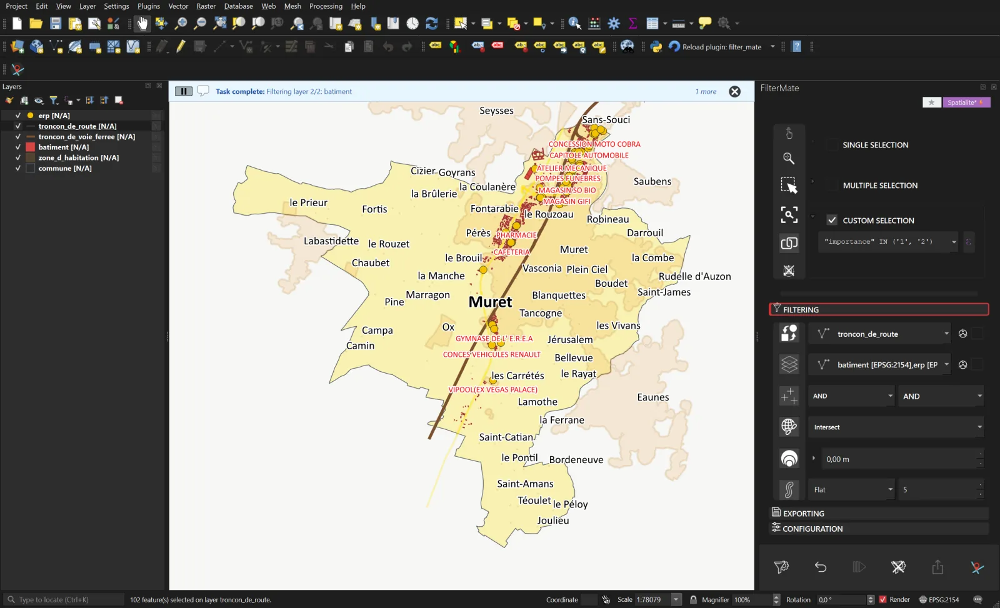
Étape 4. Les bâtiments et ERP hors secteur ont disparu de la carte. 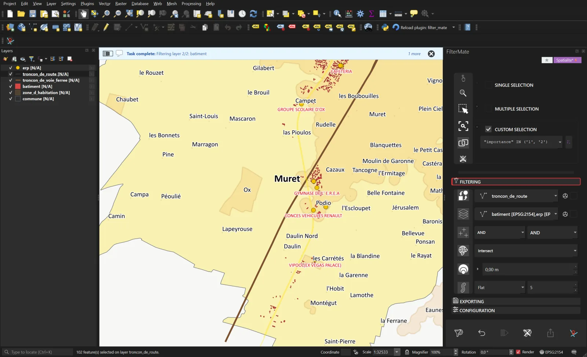
Zoom : la bande de 300 m autour de l'A64 se lit dans la répartition des bâtiments conservés.
Résultat
1 999 bâtiments et 74 ERP de Muret se trouvent dans les secteurs de bruit des 102 tronçons d'importance 1 et 2.
"largeur_de_chaussee" * 3.
Les tronçons dont la largeur est vide demandent un coalesce("largeur_de_chaussee", 3).
3Ce que la Garonne peut atteindre
BD TOPO® 3.5 © IGN, Grenade.
Le besoin
Julien prépare, pour le service urbanisme de Grenade, une réunion sur le plan de prévention des risques d'inondation. La commune est à la confluence de la Garonne et de la Save. Il veut montrer d'abord tout ce qui se trouve à moins de 300 m des surfaces en eau, puis resserrer à 100 m pour la crue fréquente, et pouvoir revenir en arrière devant les élus.
La traduction FilterMate
Source : surface_hydrographique, cadrée sur Grenade, avec une sélection multiple et Select All (77 surfaces). Cibles : bâtiments, ERP et routes, prédicat Intersect, tampon de 300 m. Second Filter à 100 m, puis Undo dans la barre d'actions.
- Cadrer Grenade. 6 998 bâtiments, 79 ERP, 1 978 tronçons de route et 77 surfaces en eau.
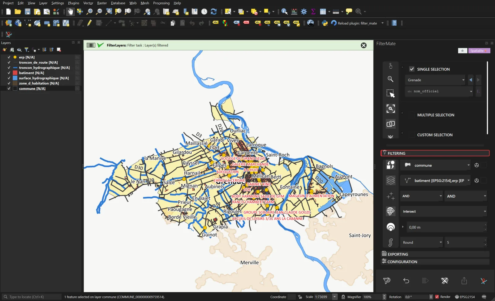
Étape 1. Les surfaces en eau (Garonne à l'est, Save au sud) sont désormais les seules de la carte. - Sélectionner toutes les surfaces en eau. Cliquez sur surface_hydrographique, cochez Multiple selection, puis clic droit dans la liste et Select All. Le résumé au-dessus de la liste compte 77 entités.
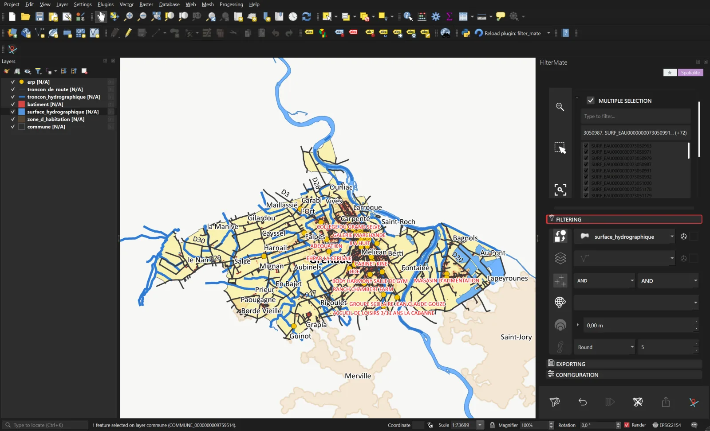
Étape 2. La liste affiche la nature et l'identifiant de chaque surface ; toutes sont cochées. - 300 m. Cibles batiment, erp et troncon_de_route, Intersect, Buffer value à 300. Filter.
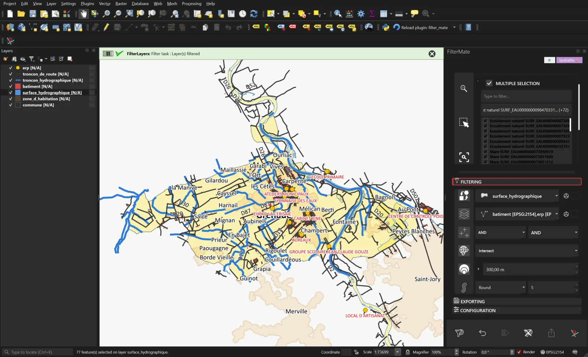
Étape 3. La bande de 300 m suit la Garonne bien au-delà de Grenade : les polygones du fleuve sont longs, et le filtre spatial des cibles remplace le cadrage communal. - 100 m. Changez la valeur du tampon et appuyez à nouveau sur Filter.
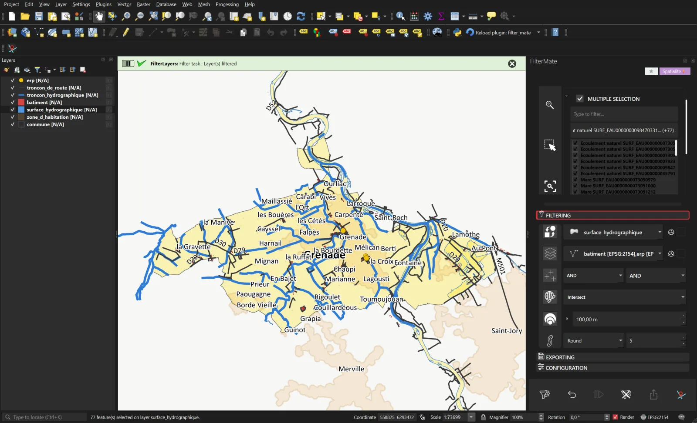
Étape 4. Le résultat se resserre sur les berges. - Undo. Le premier bouton après Filter restaure l'état précédent des trois couches, à 300 m. Redo le réappliquerait. L'historique est propre au projet et survit à un redémarrage de QGIS.
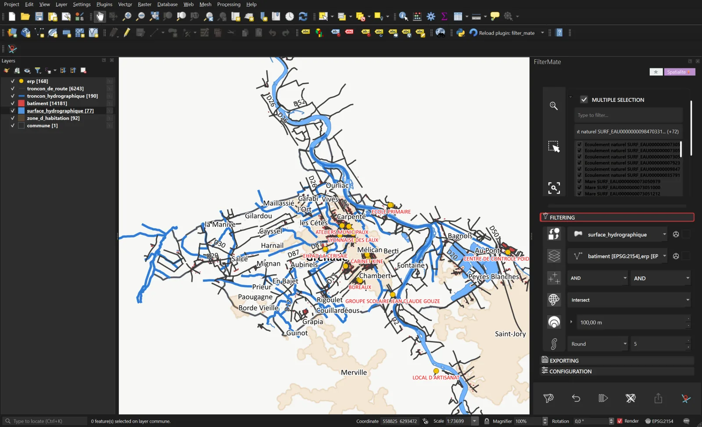
Étape 5. Retour à 300 m d'un clic.
Résultat
| Bande | Bâtiments | ERP | Tronçons de route |
|---|---|---|---|
| 300 m autour des surfaces en eau de Grenade | 14 181 | 168 | 6 243 |
| 100 m | 2 727 | 27 | 1 934 |
4Tous les ponts de la métropole
BD TOPO® 3.5 © IGN, Toulouse Métropole.
Le besoin
Karim gère les ouvrages d'art de Toulouse Métropole : 37 communes, près de 99 000 tronçons de route. Il veut l'inventaire des endroits où la voirie franchit un cours d'eau permanent, tronçons et ouvrages, pour planifier les inspections.
La traduction FilterMate
Le cadrage se fait cette fois sur la couche epci. Puis la source devient troncon_hydrographique avec la sélection personnalisée "persistance" = 'Permanent', les cibles troncon_de_route et construction_lineaire, et le prédicat Cross, sans tampon : une route qui longe la rivière n'est pas retenue, une route qui la traverse l'est.
- Cadrer l'EPCI. Couche epci en source, « Toulouse Métropole » en sélection simple sur
"nom_officiel", toutes les autres couches en cibles, Intersect. Le filtrage ramène 98 687 tronçons de route, 1 844 tronçons hydrographiques, 1 181 constructions linéaires et 70 communes touchées.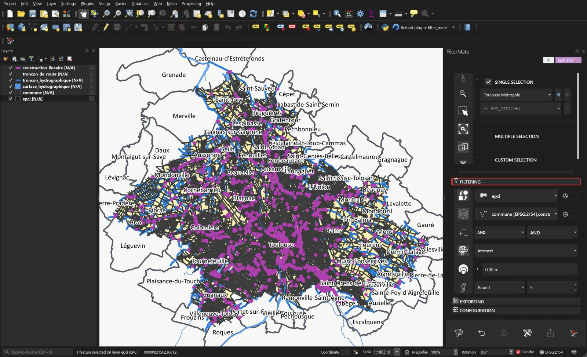
Étape 1. La métropole entière, Garonne, Hers et Touch compris. - Ne garder que les cours d'eau permanents. Source troncon_hydrographique, Custom selection
"persistance" = 'Permanent': 691 tronçons.Étape 2. Les fossés et écoulements intermittents ne comptent pas. - Vérifier la sélection sur la carte. Cliquez sur Identify dans la barre d'exploration : les 691 tronçons hydrographiques retenus par la sélection personnalisée clignotent en rouge. Ce contrôle visuel confirme la source du filtre avant de l'appliquer aux routes.
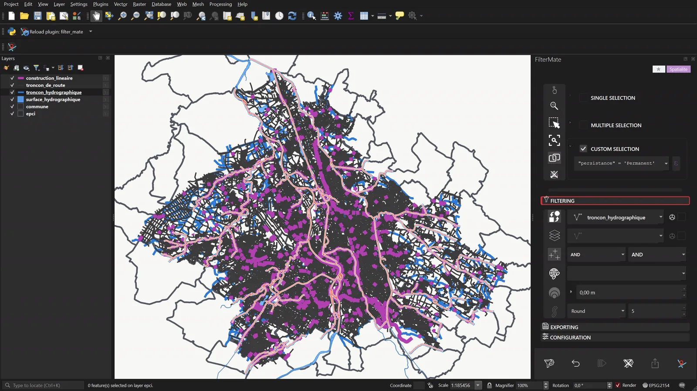
Étape 3. Identify fait clignoter la sélection personnalisée en rouge, sans modifier le filtre. - Cross. Cibles troncon_de_route et construction_lineaire, prédicat Cross seul, ligne Buffer désactivée. Filter.
Étape 4. Un seul prédicat, pas de tampon. 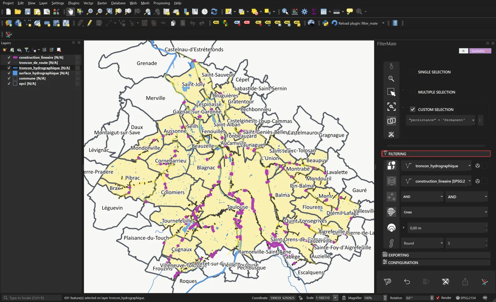
Résultat à l'échelle de la métropole : les franchissements dessinent le réseau hydrographique. 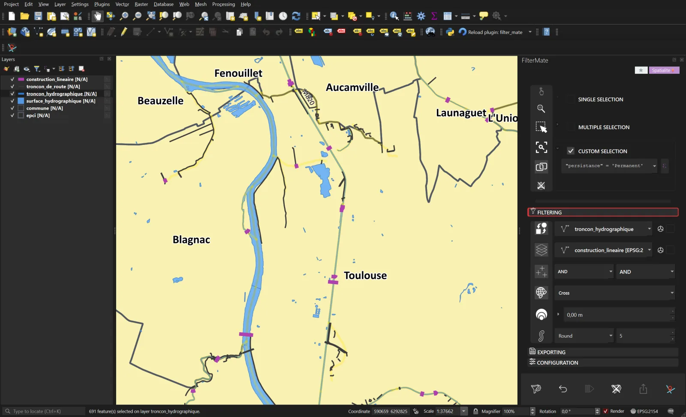
Zoom sur le nord de Toulouse : chaque segment restant est un pont ou une traversée.
Résultat
1 112 tronçons de route et 190 constructions linéaires (ponts, pour l'essentiel) franchissent un cours d'eau permanent dans l'emprise de la métropole.
5Débroussailler autour des maisons
BD TOPO® 3.5 © IGN, Bagnères-de-Luchon.
Le besoin
Élodie, à la mairie de Bagnères-de-Luchon, doit informer les propriétaires soumis aux obligations légales de débroussaillement : la végétation située à moins de 50 m d'une habitation. Elle veut la carte des bois et forêts concernés, sans les haies, qui relèvent d'un autre régime.
La traduction FilterMate
Source batiment avec la sélection personnalisée "usage_1" = 'Résidentiel', cibles zone_de_vegetation et haie, Intersect, tampon de 50 m. Puis un second filtre, attributaire cette fois, sur la couche de végétation devenue source, combiné avec AND au filtre spatial précédent.
- Cadrer Luchon. 3 699 bâtiments, 269 zones de végétation, 123 haies.
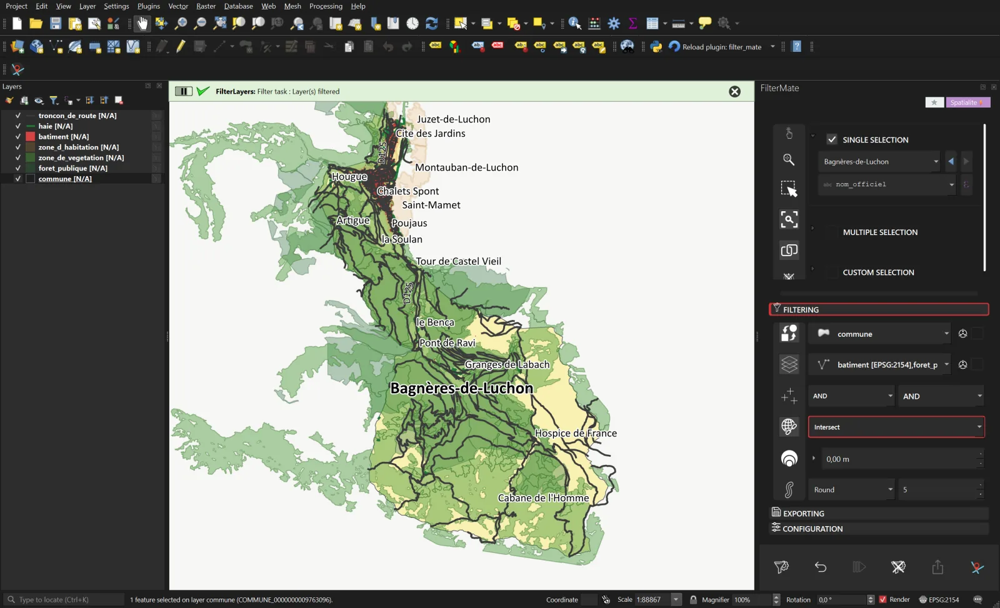
Étape 1. La vallée habitée et les versants boisés. - Ne garder que les habitations. Source batiment, Custom selection
"usage_1" = 'Résidentiel': 1 619 bâtiments.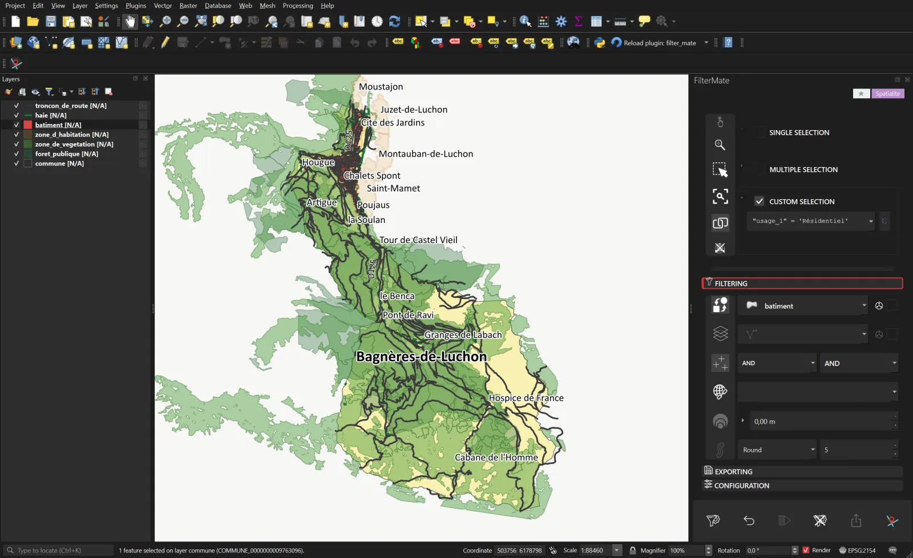
Étape 2. Annexes, bâtiments agricoles et industriels sont écartés de la source. - 50 m. Cibles zone_de_vegetation et haie, Intersect, Buffer 50. Filter : 119 zones de végétation et 48 haies restent.
Étape 3. Il reste des haies et des bois indifférenciés. - Ne garder que les bois et forêts. Cliquez sur zone_de_vegetation dans le panneau Couches : elle devient la source. Custom selection :
Activez la ligne Combine operator et laissez AND à gauche : le nouveau filtre restreint le filtre spatial déjà appliqué à la couche source au lieu de le remplacer."nature" IN ('Bois', 'Forêt fermée de feuillus', 'Forêt fermée de conifères', 'Forêt fermée mixte', 'Forêt ouverte')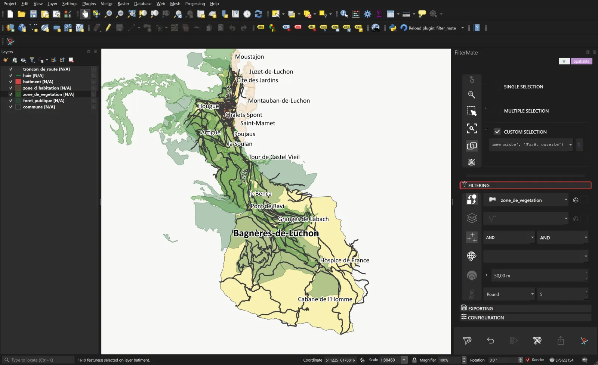
Étape 4. Le premier bouton de la ligne Combine operator est actif, l'opérateur de gauche vaut AND. - Filter.
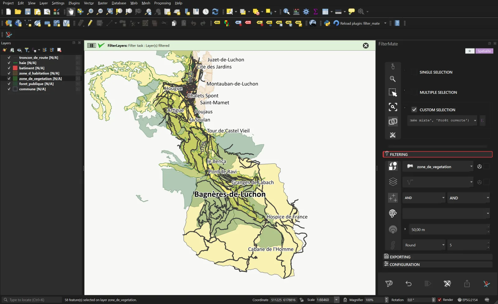
Étape 5. 58 bois et forêts, à moins de 50 m d'une habitation. 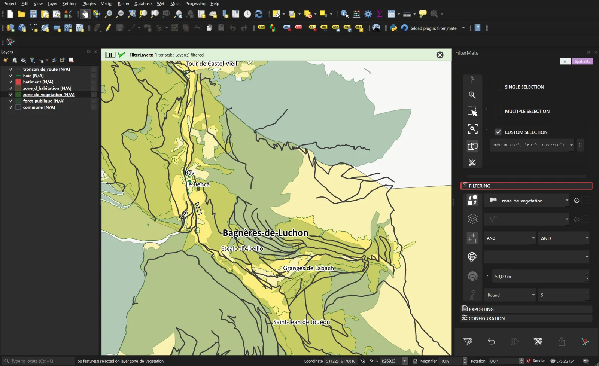
Zoom : les lisières à débroussailler entourent les quartiers en pente.
Résultat
Sur les 269 zones de végétation de la commune, 119 touchent la bande des 50 m autour d'une habitation, dont 58 bois et forêts ; 48 haies sont dans le même cas.
Sous le capot
Le filtre de la couche de végétation après l'étape 5 conserve la clause spatiale et lui ajoute la clause attributaire :
(ROWID IN (SELECT id FROM "rtree_zone_de_vegetation_geometrie" WHERE …)
AND ST_Intersects("geometrie", ST_Buffer(ST_MakeValid(ST_GeomFromText('MultiPolygon (…)', 2154)), 50.0)))
AND ("nature" IN ('Bois', 'Forêt fermée de feuillus', 'Forêt fermée de conifères', 'Forêt fermée mixte', 'Forêt ouverte'))6Les hameaux que les secours atteignent mal
BD TOPO® 3.5 © IGN, Aspet.
Le besoin
Au centre de secours d'Aspet, en pied de Pyrénées, on prépare le plan d'intervention : quels lieux-dits et zones d'activité sont à plus de 200 m d'une route revêtue, donc accessibles seulement par chemin ou sentier ?
La traduction FilterMate
C'est le prédicat Disjoint avec un tampon de 200 m : garder ce qui n'a aucun point commun avec la zone tampon. Comme Disjoint retient tout ce qui est loin, y compris dans le reste du département, les couches cibles sont d'abord cadrées par un filtre attributaire sur le code INSEE, appliqué avec l'algorithme Processing de FilterMate. Le second filtre se combine alors avec AND.
- Cadrer Aspet spatialement pour les routes, les bâtiments et la végétation (histoire 1), puis attributairement pour les deux couches cibles : Boîte à outils → FilterMate → Filtrer plusieurs couches, couches zone_d_habitation et zone_d_activite_ou_d_interet, expression
"insee_commune" = '31020'. 87 lieux-dits et 31 zones d'activité.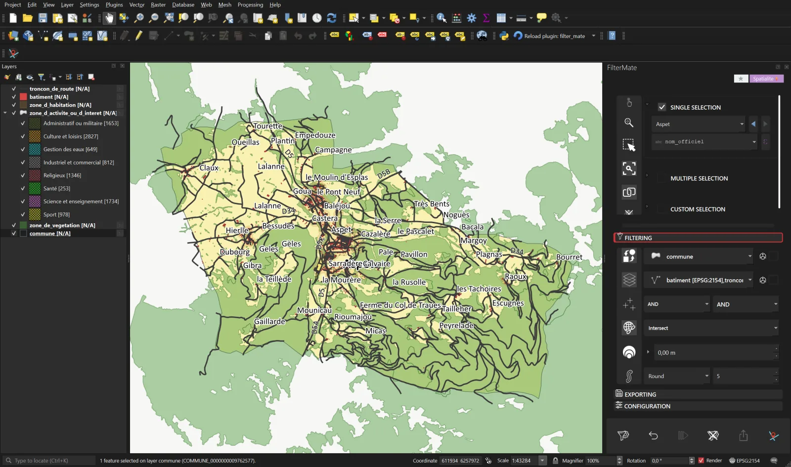
Étape 1. Les deux couches cibles portent un filtre attributaire, les autres un filtre spatial. - Ne garder que les routes revêtues. Source troncon_de_route, Custom selection
"nature" NOT IN ('Chemin', 'Sentier', 'Escalier', 'Piste cyclable', 'Route empierrée'): 494 tronçons sur 1 168.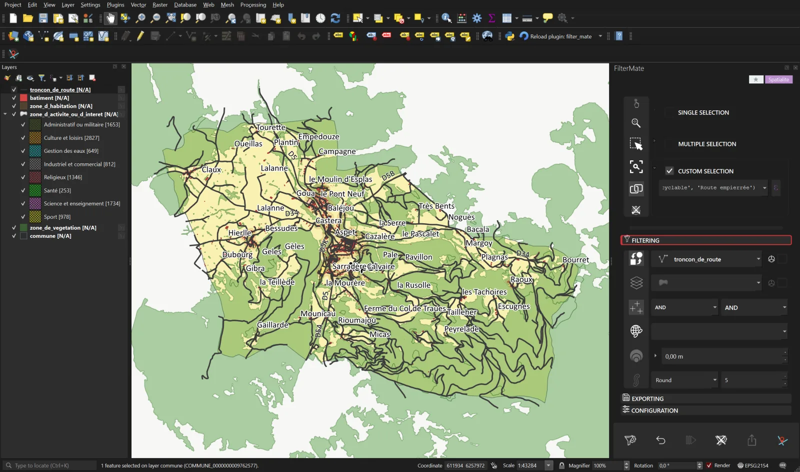
Étape 2. Les chemins et sentiers, nombreux en montagne, sont écartés. - Disjoint, 200 m, AND. Cibles zone_d_habitation et zone_d_activite_ou_d_interet, prédicat Disjoint seul, Buffer 200, ligne Combine operator active avec AND à droite (opérateur des couches cibles).
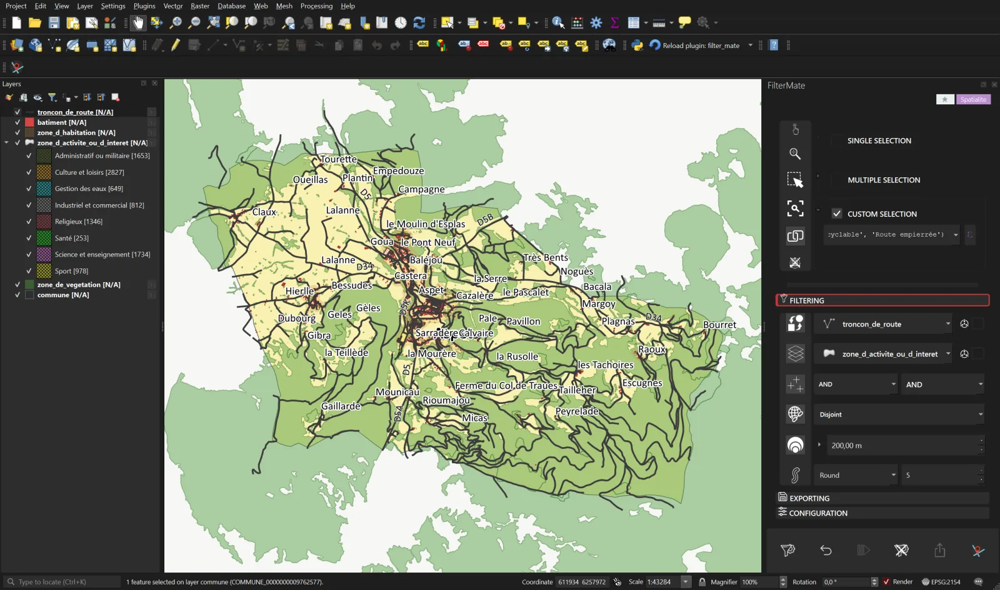
Étape 3. Disjoint plus tampon : un anneau d'exclusion. - Filter.
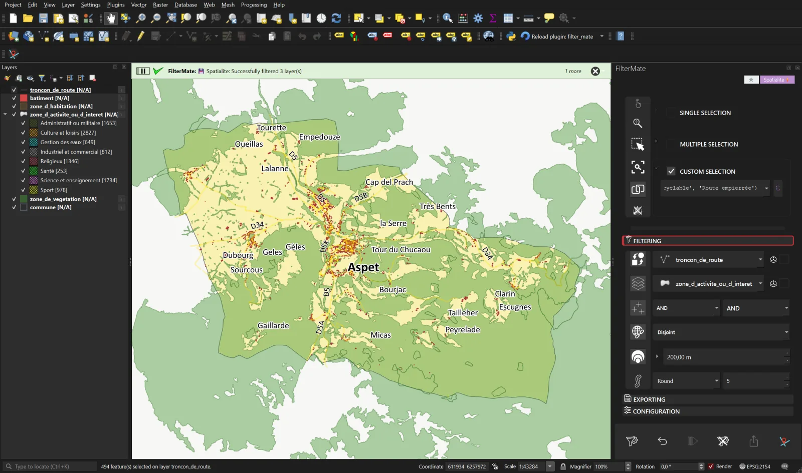
Étape 4. Les lieux-dits restants sont ceux qu'aucune route revêtue n'approche à moins de 200 m.
Résultat
22 lieux-dits d'Aspet sont à plus de 200 m d'une route revêtue ; aucune des 31 zones d'activité n'est dans ce cas. À 100 m, ils seraient 32.
7La bibliothèque de requêtes de l'équipe
BD TOPO® 3.5 © IGN, Grenade.
Le besoin
Julien (histoire 3) refera la bande des 300 m à chaque mise à jour de la BD TOPO et veut que ses collègues puissent la rejouer sans lui. Le filtre doit exister en dehors de sa tête : nommé, décrit, réapplicable en un clic, exportable.
La traduction FilterMate
Un favori enregistre le filtre complet : couche source, sélection, prédicats, tampon, couches cibles. Le menu s'ouvre par le badge ★ de l'en-tête ; le gestionnaire permet de renommer, décrire, changer la portée (ce projet ou tous les projets) et d'exporter en JSON. Avec l'extension de partage, un dépôt git commun sert de bibliothèque d'équipe.
- Enregistrer. Le filtre à 300 m de l'histoire 3 est appliqué. Cliquez sur le badge ★ puis Add filter, nommez-le « PPRI Garonne 300 m ».
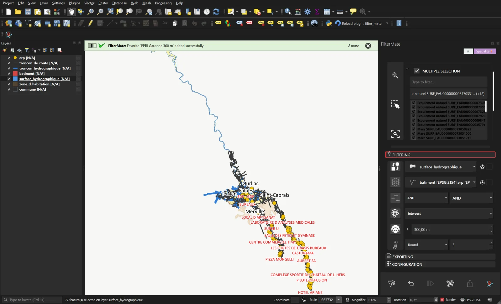
Étape 1. La barre de messages confirme l'enregistrement ; le favori apparaît aussitôt dans la section Filtrage rapide du menu ★. - Unfilter. Les trois couches retrouvent la totalité du département : 1 173 829 bâtiments.
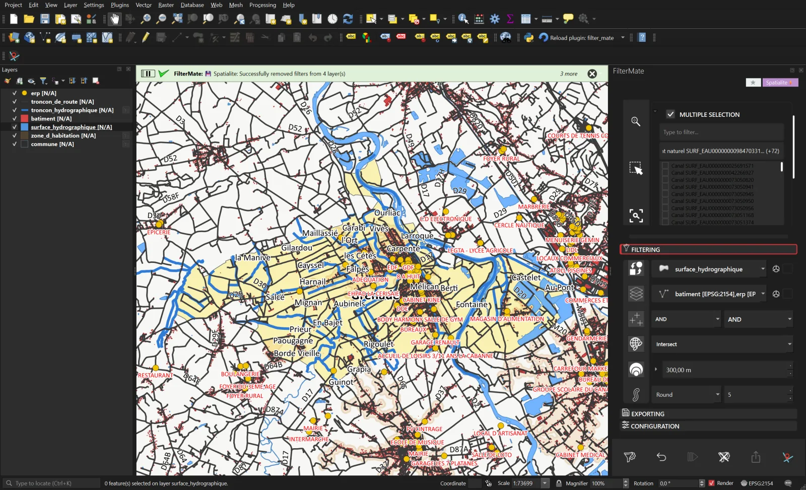
Étape 2. Retour à l'état non filtré. - Rejouer. Badge ★ puis « PPRI Garonne 300 m » : le filtre se réapplique, avec les mêmes 14 181 bâtiments, 168 ERP et 6 243 tronçons.
Étape 3. Même résultat, un seul clic. - Décrire et partager. Manage favorites… ouvre le gestionnaire : description, tags, portée, expression exacte, onglet Remote pour publier vers un dépôt git. Export… écrit un fichier JSON à envoyer à un collègue, qui l'importera depuis le même menu.
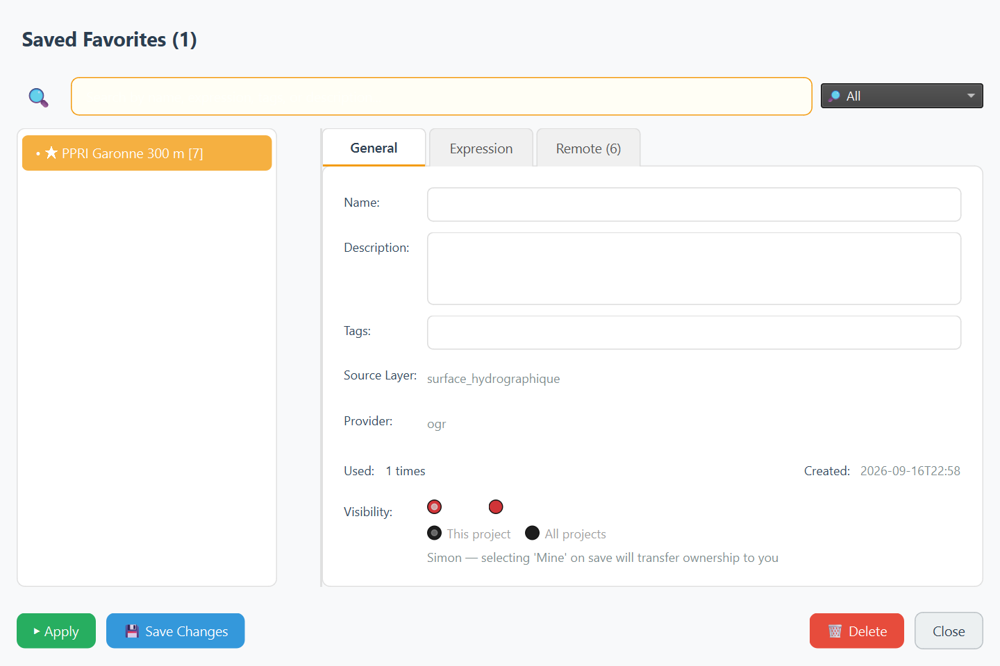
Étape 4. Le gestionnaire : liste à gauche, détails et expression à droite.
8Qu'est-ce qui a changé depuis l'édition précédente ?
BD TOPO® 3.5 © IGN, Haute-Garonne.
Le besoin
Sophie administre le SIG du département et vient de recevoir l'édition de mars 2026 de la BD TOPO. Avant de la diffuser, elle veut isoler les objets modifiés depuis l'édition précédente sur quatre couches, pour un contrôle qualité, et pouvoir refaire ce contrôle dans un modèle Processing à chaque édition.
La traduction FilterMate
Pas de géométrie ici : un seul filtre attributaire à appliquer à plusieurs couches. C'est le rôle de l'algorithme filtermate:batch_filter de la boîte à outils Processing, utilisable dans le modeleur graphique, en mode batch ou depuis Python.
- Ouvrir la boîte à outils et chercher « filtermate ».
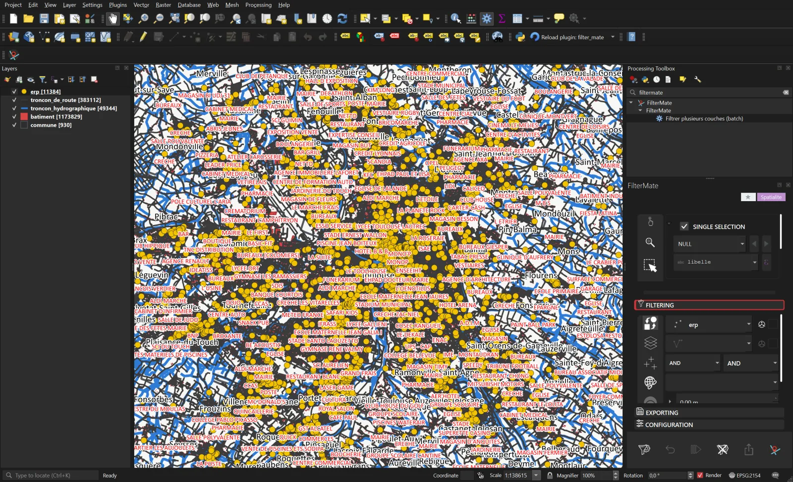
Étape 1. Le fournisseur FilterMate et son algorithme de filtrage par lot. - Choisir les couches et l'expression. batiment, troncon_de_route, troncon_hydrographique, erp et l'expression
"date_modification" >= '2025-03-15'.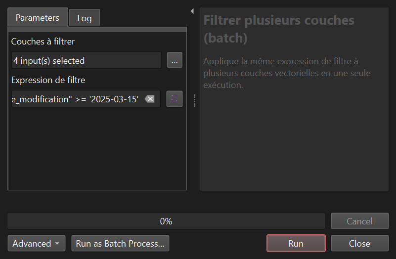
Étape 2. Un dialogue Processing ordinaire : il s'enchaîne dans un modèle comme n'importe quel autre. - Exécuter. Les quatre couches reçoivent le filtre en une passe.
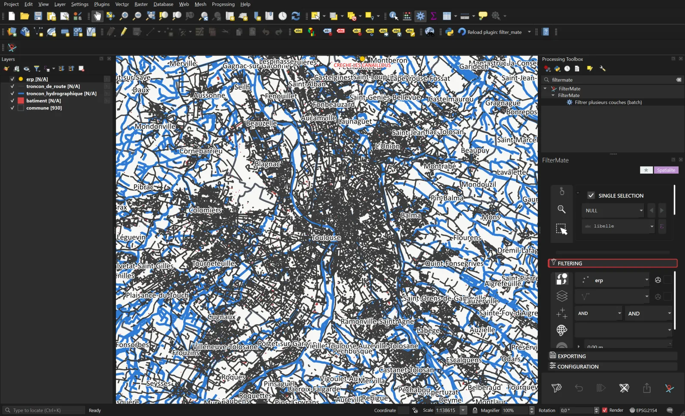
Étape 3. Autour de Toulouse, les objets modifiés depuis un an.
Résultat
| Couche | Département | Modifiés depuis le 15 mars 2025 |
|---|---|---|
| troncon_de_route | 383 112 | 173 616 |
| troncon_hydrographique | 49 344 | 28 519 |
| batiment | 1 173 829 | 22 954 |
| erp | 11 384 | 3 |
La même chose depuis la console Python
import processing
processing.run("filtermate:batch_filter", {
"INPUT_LAYERS": ["batiment", "troncon_de_route", "troncon_hydrographique", "erp"],
"EXPRESSION": "\"date_modification\" >= '2025-03-15'",
})9Rejouer ces histoires chez vous
- Téléchargez la BD TOPO de votre département sur la Géoplateforme de l'IGN (thème « Tous thèmes », format GeoPackage, projection Lambert-93). Le fichier est livré avec ses index spatiaux : c'est ce qui rend les cascades rapides.
- Chargez les couches nommées dans chaque histoire. Les styles embarqués dans le GeoPackage cachent les bâtiments au-delà du 1:25 000 : désactivez la visibilité dépendante de l'échelle dans les propriétés de la couche, ou appliquez vos propres styles.
- Remplacez les noms de communes par les vôtres. Les champs utilisés (
nom_officiel,importance,persistance,usage_1,nature,insee_commune,date_modification) sont ceux de la BD TOPO 3.x, identiques dans tous les départements. - Pour reproduire les captures, le script
scripts/recipe_screenshots.pydu dépôt pilote QGIS d'un bout à l'autre de chaque histoire, vérifie les effectifs et enregistre une image par étape.